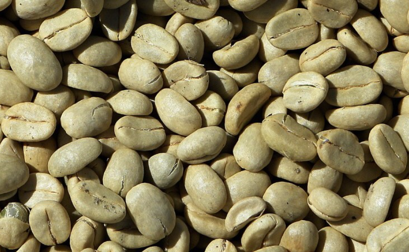

A coffee bean is a seed of the Coffea plant and the source for coffee.
It is the pit inside the red or purple fruit often referred to as a cherry.
Just like ordinary cherries, the coffee fruit is also a so-called
stone fruit. Even though the coffee beans are not technically beans,
they are referred to as such because of their resemblance to true beans.
The fruits; cherries or berries, most commonly contain two stones with
their flat sides together. A small percentage of cherries contain a
single seed, instead of the usual two. This is called a "peaberry".
The peaberry occurs only between 10% and 15% of the time,
and it is a fairly common (yet scientifically unproven) belief that
they have more flavour than normal coffee beans.[3] Like Brazil nuts
(a seed) and white rice, coffee beans consist mostly of endosperm.[4]